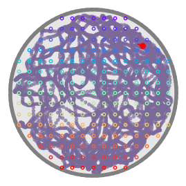
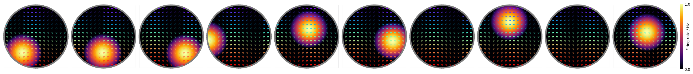
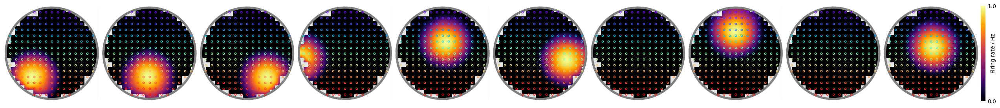
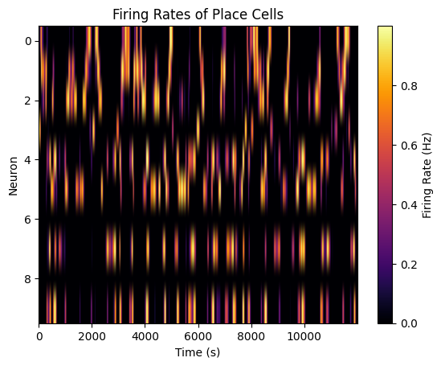
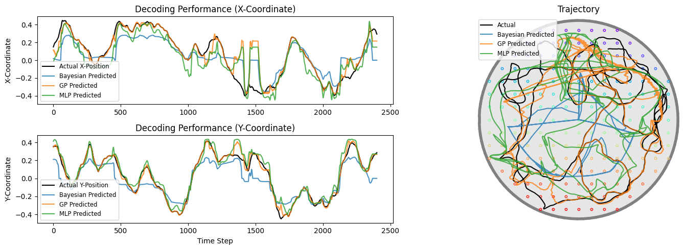
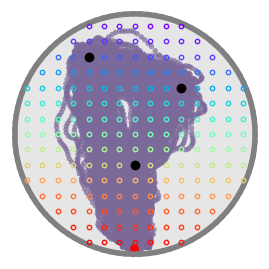

Neural Decoding¶
In this tutorial, we'll explore how to use the Deep Neural Network decoders in
decoding
submodule to analyze the neural correlates of behavior.
We will begin with synthetic data generation, followed by training and evaluating models on real neural data. The goal is to understand how neural activity can be decoded to predict behavioral outcomes.
Setup¶
First, let's import the necessary libraries and set up our environment.
Imports¶
%reload_ext autoreload
%autoreload 2
import logging
import random
import gpytorch
import ipywidgets as widgets
import matplotlib as mpl
import matplotlib.pyplot as plt
import nelpy as nel
import numpy as np
import pandas as pd
import ratinabox as rbx
import sklearn
import torch
import torch.nn.functional as F
from torch import nn
import neuro_py as npy
# Disable logging
logger = logging.getLogger()
logger.disabled = True
Set device and random seed for reproducibility¶
def set_seed(seed=None, seed_torch=True):
if seed is None:
seed = np.random.choice(2**32 - 1)
random.seed(seed)
np.random.seed(seed)
if seed_torch:
torch.manual_seed(seed)
torch.cuda.manual_seed_all(seed)
torch.cuda.manual_seed(seed)
torch.backends.cudnn.benchmark = True
torch.backends.cudnn.deterministic = True
print(f"Random seed {seed} has been set.")
return seed
def set_device():
device = "cuda" if torch.cuda.is_available() else "cpu"
if device != "cuda":
print("GPU is not enabled.")
else:
print("GPU is enabled.")
return device
SEED = set_seed(2025)
DEVICE = set_device()
torch.set_float32_matmul_precision('medium')
Random seed 2025 has been set.
GPU is enabled.
Helper Functions¶
Don't worry about the details of these functions; they are provided to streamline our workflow.
# @title Helper Functions
def create_cheeseboard_maze(
radius=6.8, nrewards=3, nwellsonaxis=17, nseparationunits=4
):
"""
Creates a cheeseboard-inspired maze using RatInABox with a circular environment
and a grid of navigable positions.
"""
# make a bulb shaped boundary
environment = rbx.Environment(
params=dict(
boundary=[
[0.5 * np.cos(t), 0.5 * np.sin(t)]
for t in np.linspace(0, 2 * np.pi, 100)
],
boundary_conditions="solid",
dimensionality="2D",
)
)
# Generate the grid of positions
x = np.linspace(-radius * 1.03, radius * 1.03, nwellsonaxis)
y = np.linspace(-radius * 1.03, radius * 1.03, nwellsonaxis)
X, Y = np.meshgrid(x, y)
grid_positions = np.vstack([X.flatten(), Y.flatten()]).T
separationunit = np.sqrt((x[1] - x[0]) ** 2 + (y[1] - y[0]) ** 2)
# Filter positions to stay within the circle
circle_mask = (X**2 + Y**2) <= radius**2
grid_positions_within_circle = grid_positions[circle_mask.flatten()]
# Randomly pick 3 points with a minimum separation
def pick_random_points(points, num_points=3, min_dist=4):
chosen_points = []
chosen_points_indices = []
while len(chosen_points) < num_points:
candidate_idx = np.random.choice(len(points))
candidate = points[candidate_idx]
if all(np.linalg.norm(candidate - p) >= min_dist for p in chosen_points):
chosen_points.append(candidate)
chosen_points_indices.append(candidate_idx)
return np.array(chosen_points_indices)
reward_indices = pick_random_points(
grid_positions_within_circle,
num_points=nrewards,
min_dist=separationunit * nseparationunits,
)
# add wells
for i, gp in enumerate(grid_positions_within_circle):
environment.add_object(gp / (radius * 2))
return environment, reward_indices
# Plotting
def visualize_predicted_trial(
trial: int,
actual_trials: list,
predictions: dict,
environment=None,
reward_indices=None,
figsize: tuple = (15, 5),
coord_labels: tuple = ("X", "Y"),
alpha: float = 0.8,
):
"""
Visualize decoding performance for a single trial with arbitrary number of decoders.
Parameters
----------
trial : int
Trial index to visualize.
actual_trials : list
List of actual position arrays, one per trial.
predictions : dict
Dictionary mapping decoder names to their prediction arrays.
Example: {"Ridge": ridge_preds, "MLP": mlp_preds, "GP": gp_preds}
environment : optional
RatInABox environment object for plotting maze structure.
reward_indices : optional
Indices of reward locations to plot.
figsize : tuple, optional
Figure size, by default (15, 5).
coord_labels : tuple, optional
Labels for coordinates, by default ("X", "Y").
alpha : float, optional
Alpha value for prediction lines, by default 0.8.
Returns
-------
fig : matplotlib.figure.Figure
The generated figure.
"""
n_coords = actual_trials[trial].shape[1]
fig = plt.figure(figsize=figsize)
nrows, ncols = n_coords, 4
gs = mpl.gridspec.GridSpec(nrows, ncols, figure=fig)
# Plot each coordinate over time
for coord_idx in range(n_coords):
ax = fig.add_subplot(gs[coord_idx, 0:2])
ax.plot(
actual_trials[trial][:, coord_idx],
label=f"Actual {coord_labels[coord_idx]}-Position",
color="black",
linewidth=1.5,
)
for decoder_name, preds_trials in predictions.items():
ax.plot(
preds_trials[trial][:, coord_idx],
label=f"{decoder_name} Predicted",
alpha=alpha,
)
ax.set_ylabel(f"{coord_labels[coord_idx]}-Coordinate")
ax.set_title(f"Decoding Performance ({coord_labels[coord_idx]}-Coordinate)")
if coord_idx == n_coords - 1:
ax.set_xlabel("Time Step")
ax.legend(loc="best", fontsize="small")
# Plot 2D trajectory with environment
ax = fig.add_subplot(gs[:, 2:])
if environment is not None:
environment.plot_environment(fig, ax=ax)
ax.plot(*actual_trials[trial].T, label="Actual", color="black", linewidth=1.5)
for decoder_name, preds_trials in predictions.items():
ax.plot(*preds_trials[trial].T, label=f"{decoder_name} Predicted", alpha=alpha)
# Plot rewards if provided
if reward_indices is not None and environment is not None:
ax.plot(*environment.objects["objects"][reward_indices].T, "ko", label="Reward")
ax.set_xlabel(coord_labels[0].lower())
ax.set_ylabel(coord_labels[1].lower())
ax.set_title("Trajectory")
ax.legend(loc="best", fontsize="small")
plt.tight_layout()
return fig
# GPyTorch model for multi-output GP regression (GPU/CPU parallelized)
class MultitaskGPModel(gpytorch.models.ExactGP):
def __init__(self, train_x, train_y, likelihood, num_tasks):
super().__init__(train_x, train_y, likelihood)
self.mean_module = gpytorch.means.MultitaskMean(
gpytorch.means.ConstantMean(), num_tasks=num_tasks
)
self.covar_module = gpytorch.kernels.MultitaskKernel(
gpytorch.kernels.RBFKernel(), num_tasks=num_tasks, rank=1
)
def forward(self, x):
mean_x = self.mean_module(x)
covar_x = self.covar_module(x)
return gpytorch.distributions.MultitaskMultivariateNormal(mean_x, covar_x)
def train_gp_decoder(
train_neural: pd.DataFrame,
train_trajectory: pd.DataFrame,
test_neural: pd.DataFrame,
test_trajectory: pd.DataFrame,
n_iter: int = 50,
lr: float = 0.1,
device: str = DEVICE,
) -> tuple:
"""
Train a Gaussian Process decoder for neural trajectory prediction.
Parameters
----------
train_neural : pd.DataFrame or np.ndarray
Training neural data (n_samples, n_neurons)
train_trajectory : pd.DataFrame or np.ndarray
Training trajectory data (n_samples, n_dims)
test_neural : pd.DataFrame or np.ndarray
Test neural data
test_trajectory : pd.DataFrame or np.ndarray
Test trajectory data
n_iter : int, optional
Number of training iterations, by default 50
lr : float, optional
Learning rate, by default 0.1
device : str, optional
Device to use ('cuda' or 'cpu'), by default DEVICE
use_lightning : bool, optional
Whether to use PyTorch Lightning for training, by default True
Returns
-------
tuple
(predictions, r2_score, model) - predictions on test set, R² score, and trained model
"""
# Convert data to torch tensors
# check if train_neural is dataframe
train_x = torch.tensor(
(train_neural if not isinstance(train_neural, pd.DataFrame)
else train_neural.values), dtype=torch.float32)
train_y = torch.tensor(
(train_trajectory if not isinstance(train_trajectory, pd.DataFrame)
else train_trajectory.values), dtype=torch.float32)
test_x = torch.tensor(
(test_neural if not isinstance(test_neural, pd.DataFrame)
else test_neural.values), dtype=torch.float32)
test_y = torch.tensor(
(test_trajectory if not isinstance(test_trajectory, pd.DataFrame)
else test_trajectory.values), dtype=torch.float32)
num_tasks = train_y.shape[1] # Number of output dimensions
# Manual training loop (faster, no progress bar)
train_x = train_x.to(device)
train_y = train_y.to(device)
test_x = test_x.to(device)
# Initialize model
likelihood_gp = gpytorch.likelihoods.MultitaskGaussianLikelihood(num_tasks=num_tasks).to(device)
model_gp = MultitaskGPModel(train_x, train_y, likelihood_gp, num_tasks).to(device)
# Training mode
model_gp.train()
likelihood_gp.train()
# Optimizer
optimizer = torch.optim.Adam(model_gp.parameters(), lr=lr)
mll = gpytorch.mlls.ExactMarginalLogLikelihood(likelihood_gp, model_gp)
# Training loop
for i in range(n_iter):
optimizer.zero_grad()
output = model_gp(train_x)
loss = -mll(output, train_y)
loss.backward()
optimizer.step()
if (i + 1) % 10 == 0:
print(f"Iter {i+1}/{n_iter} - Loss: {loss.item():.3f}")
# Evaluation
model_gp.eval()
likelihood_gp.eval()
with torch.no_grad(), gpytorch.settings.fast_pred_var():
predictions = likelihood_gp(model_gp(test_x))
pred_mean = predictions.mean.cpu().numpy()
model = (model_gp, likelihood_gp)
# Calculate R² score
r2 = sklearn.metrics.r2_score(
(test_trajectory if not isinstance(test_trajectory, pd.DataFrame)
else test_trajectory.values),
pred_mean
)
return pred_mean, r2, model
# Widgets
def create_trial_visualization_widget(
actual_trials: list,
predictions: dict,
):
"""
Create an interactive widget for visualizing decoding performance across trials.
Parameters
----------
actual_trials : list
List of actual position arrays, one per trial.
predictions : dict
Dictionary mapping decoder names to their prediction arrays.
Example: {"Ridge": ridge_preds_trials, "MLP": mlp_preds_trials}
Returns
-------
widget : ipywidgets.interactive
Interactive widget for trial visualization.
"""
n_trials = len(actual_trials)
def _visualize(trial=0):
fig = visualize_predicted_trial(
trial=trial,
actual_trials=actual_trials,
predictions=predictions,
)
plt.show()
return widgets.interact(_visualize, trial=(0, n_trials - 1, 1))
Section 1: Decode Synthetic Neural Data¶
Section 1.1: Generate Synthetic Data¶
Section 1.1.1: Create Environment¶
The following function generates a cheeseboard-inspired maze environment for the agent:
environment, reward_indices = create_cheeseboard_maze()
Section 1.1.2: Create Agent and Place Cells encoding agent's position¶
agent = rbx.Agent(environment)
N_NEURONS = 10
TIME = 10
bins = int(TIME * 60 / agent.dt)
placecells = rbx.PlaceCells(
agent,
params=dict(
description="gaussian_threshold",
widths=0.3,
n=N_NEURONS,
color="C1",
wall_geometry="line_of_sight",
),
)
# simulate the agent in the maze
for i in range(bins):
agent.update()
placecells.update()
agent.plot_trajectory();
print(f"Reward Indices: {reward_indices}")
print(f'Number of time bins: {bins}')
WARNING: This figure has not been saved.
• To AUTOMATICALLY save all plots (recommended), set `ratinabox.autosave_plots = True`
• To MANUALLY save plots, call `ratinabox.utils.save_figure(figure_object, save_title).
This warning will not be shown again
HINT: You can stylize plots to make them look like repo/paper by calling `ratinabox.stylize_plots()`
This hint will not be shown again
Reward Indices: [ 62 140 160]
Number of time bins: 12000

fig, ax = placecells.plot_rate_map(chosen_neurons="all")

placecells.plot_rate_map(method="history");

Section 1.2: Prepare Data for Decoding¶
Extract firing rates from the place cells and the agent's positional trajectory
t_start = 0.0 # seconds
t_end = None
t = np.array(placecells.history["t"])
i_start = 0 if t_start is None else np.argmin(np.abs(t - t_start))
i_end = None if t_end is None else np.argmin(np.abs(t - t_end))
t = t[i_start:i_end] # subsample data for training (most of it is redundant anyway)
neural_data = np.array(placecells.history["firingrate"])[i_start:i_end]
trajectory = np.array(placecells.Agent.history["pos"])[i_start:i_end]
Format the neural data and behavioral variables (here, position) for decoding:
# Convert neural data and trajectory into training format
neural_data_df = pd.DataFrame(neural_data) # Neural data as DataFrame
predict_bv = ["x", "y"]
trajectory_df = pd.DataFrame(trajectory, columns=predict_bv) # Positions
# Split into training and testing sets (e.g., 80% train, 20% test)
split_idx = int(0.8 * len(neural_data_df))
train_neural, test_neural = neural_data_df[:split_idx], neural_data_df[split_idx:]
train_trajectory, test_trajectory = trajectory_df[:split_idx], trajectory_df[split_idx:]
trajectory = nel.AnalogSignalArray(trajectory_df.values.T, abscissa_vals=t)
speed = nel.utils.ddt_asa(trajectory, smooth=True, sigma=0.250, norm=True)
trajectory, speed
(<AnalogSignalArray at 0x7f8f74348c20: 2 signals> for a total of 10:00 minutes,
<AnalogSignalArray at 0x7f8f6c76d370: 1 signals> for a total of 10:00 minutes)
plt.imshow(neural_data_df.T, aspect="auto", cmap="inferno")
plt.xlabel("Time (s)")
plt.ylabel("Neuron")
plt.title("Firing Rates of Place Cells")
plt.colorbar(label="Firing Rate (Hz)")
plt.show()

Section 1.3: Train Linear and Gaussian Process Decoders¶
Train simple hypothesis-driven decoders (because they bake very specific assumptions about how stimuli map to neural responses into their functional form and priors) for baseline comparison with more flexible Bayesian and DNN decoders:
For best practice, comparing performance to these simpler models is essential to show that increased flexibility and capacity lead to meaningful gains in predictive accuracy or interpretability, rather than merely overfitting or exploiting idiosyncrasies of the dataset.
Section 1.3.1: Linear Decoder (Ridge Regression)¶
ridge = sklearn.linear_model.Ridge(alpha=0.01)
ridge.fit(train_neural, train_trajectory)
ridge.score(test_neural, test_trajectory)
0.7261317318346573
Section 1.3.2: Gaussian Process (GP) Decoder¶
# Train GP decoder using Lightning
pred_mean_gp, r2_gp, gp_model = train_gp_decoder(
train_neural, train_trajectory, test_neural, test_trajectory,
n_iter=50, lr=0.1, device=DEVICE
)
print(f"GP R² Score: {r2_gp:.4f}")
Iter 10/50 - Loss: 0.737
Iter 20/50 - Loss: 0.285
Iter 30/50 - Loss: -0.201
Iter 40/50 - Loss: -0.685
Iter 50/50 - Loss: -1.116
GP R² Score: 0.8801
Section 1.4: Train Bayesian & DNN Decoders¶
Section 1.4.1: Bayesian Decoder¶
tc = npy.tuning.SpatialMap( # training on all data for Bayesian decoder
trajectory,
nel.AnalogSignalArray(neural_data_df.values.T, abscissa_vals=t),
s_binsize=0.0075,
speed=speed,
speed_thres=0.01,
tuning_curve_sigma=0.2,
place_field_min_size=0.2,
place_field_max_size=100,
place_field_sigma=0.2,
)
posterior_prob = npy.ensemble.decoding.bayesian.decode(
test_neural.values, # (n_timebins, n_neurons)
tc.ratemap.T,
tc.occupancy.T,
agent.dt,
uniform_prior=True,
)
test_pred_bayesian = npy.ensemble.position_estimator(
posterior_prob,
tc.ybin_centers,
tc.xbin_centers,
method="com",
)
sklearn.metrics.r2_score(
test_trajectory.values, # (n_timebins, 2)
test_pred_bayesian,
)
0.7297538745740977
Section 1.4.2: Train and Evaluate the DNN Decoder¶
Set up the decoder model and hyperparameters. For example, use an MLP decoder.
We refer description of key hyperparameters that impact model performance:
help(npy.ensemble.decoding.train_model)
Help on function train_model in module neuro_py.ensemble.decoding.pipeline:
train_model(partitions: List[Tuple[numpy.ndarray, numpy.ndarray, numpy.ndarray, numpy.ndarray, numpy.ndarray, numpy.ndarray]], hyperparams: Dict[str, Any], resultspath: Optional[str] = None, stop_partition: Optional[int] = None) -> Tuple[List[numpy.ndarray], List[Any], List[Dict[str, Any]], Dict[str, List[float]]]
Train a DNN model on the given data partitions with in-built caching & checkpointing.
Parameters
----------
partitions : List[Tuple[np.ndarray, np.ndarray, np.ndarray, np.ndarray, np.ndarray, np.ndarray]]
K-fold partitions of the data with the following format:
[(nsv_train, bv_train, nsv_val, bv_val, nsv_test, bv_test), ...]
Each element of the list is a tuple of numpy arrays containing the with
pairs of neural state vectors and behavioral variables for the training,
validation, and test sets. Each array has the shape
(ntrials, nbins, nfeats) where nfeats is the number of neurons for the
neural state vectors and number of behavioral features to be predicted
for the behavioral variables.
hyperparams : Dict[str, Any]
Dictionary containing the hyperparameters for the model training.
resultspath : Optional[str], default=None
Path to the directory where the trained models and logs will be saved.
stop_partition : Optional[int], default=None
Index of the partition to stop training at. Only useful for debugging,
by default None
Returns
-------
tuple
Tuple containing the predicted behavioral variables for each fold,
the trained models for each fold, the normalization parameters for each
fold, and the evaluation metrics for each fold.
Notes
-----
The hyperparameters dictionary should contain the following keys:
- `model`: str, the type of the model to be trained. Multi-layer
Perceptron (MLP), Long Short-Term Memory (LSTM), many-to-many LSTM
(M2MLSTM), Transformer (NDT).
- `model_args`: dict, the arguments to be passed to the model constructor.
The arguments should be in the format expected by the model constructor.
- `in_dim`: The number of input features.
- `out_dim`: The number of output features.
- `hidden_dims`: The number of hidden units each hidden layer of the
model. Can also take float values to specify the dropout rate.
- For LSTM and M2MLSTM, it should be a tuple of the hidden size,
the number of layers, and the dropout rate.
If the model is an MLP, it should be a list of hidden layer
sizes which can also take float values to specify the dropout
rate.
- If the model is an LSTM or M2MLSTM, it should be a list of the
hidden layer size, the number of layers, and the dropout rate.
- If the model is an NDT, it should be a list of the hidden layer
size, the number of layers, the number of attention heads, the
dropout rate for the encoder layer, and the dropout rate applied
before the decoder layer.
- `max_context_len`: The maximum context length for the transformer
model. Only used if the model is an NDT.
- `args`:
- `clf`: If True, the model is a classifier; otherwise, it is a
regressor.
- `activations`: The activation functions for each layer.
- `criterion`: The loss function to optimize.
- `epochs`: The number of complete passes through the training
dataset.
- `lr`: Controls how much to change the model in response to the
estimated error each time the model weights are updated. A
smaller value ensures stable convergence but may slow down
training, while a larger value speeds up training but risks
overshooting.
- `base_lr`: The initial learning rate for the learning rate
scheduler.
- `max_grad_norm`: The maximum norm of the gradients.
- `iters_to_accumulate`: The number of iterations to accumulate
gradients.
- `weight_decay`: The L2 regularization strength.
- `num_training_batches`: The number of training batches. If
None, the number of batches is calculated based on the batch
size and the length of the training data.
- `scheduler_step_size_multiplier`: The multiplier for the
learning rate scheduler step size. Higher values lead to
faster learning rate decay.
- `bins_before`: int, the number of bins before the current bin to
include in the input data.
- `bins_current`: int, the number of bins in the current time bin to
include in the input data.
- `bins_after`: int, the number of bins after the current bin to include
in the input data.
- `behaviors`: list, the indices of the columns of behavioral features
to be predicted. Selected behavioral variable must have homogenous
data types across all features (continuous for regression and
categorical for classification)
- `batch_size`: int, the number of training examples utilized in one
iteration. Larger batch sizes offer stable gradient estimates but
require more memory, while smaller batches introduce noise that can
help escape local minima.
- When using M2MLSTM or NDT and input trials are of inconsistents
lengths, the batch size should be set to 1.
- M2MLSTM does not support batch_size != 1.
- `num_workers`: int, The number of parallel processes to use for data
loading. Increasing the number of workers can speed up data loading
but may lead to memory issues. Too many workers can also slow down
the training process due to contention for resources.
- `accelerator`: str, the device to use for training. Should be 'cuda' or
'cpu'.
- `seed`: int, the random seed for reproducibility.
decoder_type = "MLP" # Select decoder type (e.g., MLP)
hyperparams = dict(
batch_size=512 * 4,
num_workers=5,
model=decoder_type,
model_args=dict(
in_dim=train_neural.shape[1],
out_dim=train_trajectory.shape[1],
hidden_dims=[64, 32, 16, 8],
args=dict(
clf=False,
activations=nn.CELU,
criterion=F.mse_loss,
epochs=10,
lr=3e-2,
base_lr=1e-2,
max_grad_norm=1.0,
iters_to_accumulate=1,
weight_decay=1e-2,
num_training_batches=None,
scheduler_step_size_multiplier=1,
),
),
behaviors=[0, 1],
bins_before=0,
bins_current=1,
bins_after=0,
accelerator=DEVICE,
seed=SEED,
)
Train the decoder using the train_model function:
partitions = [(
train_neural,
train_trajectory,
test_neural,
test_trajectory,
test_neural,
test_trajectory,
)]
# Train the model using the pipeline function from your decoder module
results_path = None # checkpoints will be saved to this path, optimizing reruns
bv_preds_folds, bv_models_folds, norm_params_folds, metrics_folds = (
npy.ensemble.decoding.train_model(partitions, hyperparams, resultspath=results_path)
)
Seed set to 2025
Trainer will use only 1 of 2 GPUs because it is running inside an interactive / notebook environment. You may try to set `Trainer(devices=2)` but please note that multi-GPU inside interactive / notebook environments is considered experimental and unstable. Your mileage may vary.
/local/storage/kg574/programs/miniforge3/envs/cmc/lib/python3.12/site-packages/lightning/fabric/plugins/environments/slurm.py:204: The `srun` command is available on your system but is not used. HINT: If your intention is to run Lightning on SLURM, prepend your python command with `srun` like so: srun python /home/kg574/.local/lib/python3.12/site-packages/ipyk ...
💡 Tip: For seamless cloud uploads and versioning, try installing [litmodels](https://pypi.org/project/litmodels/) to enable LitModelCheckpoint, which syncs automatically with the Lightning model registry.
GPU available: True (cuda), used: True
TPU available: False, using: 0 TPU cores
LOCAL_RANK: 0 - CUDA_VISIBLE_DEVICES: [0,1]
┏━━━┳━━━━━━┳━━━━━━━━━━━━┳━━━━━━━━┳━━━━━━━┳━━━━━━━┓ ┃ ┃ Name ┃ Type ┃ Params ┃ Mode ┃ FLOPs ┃ ┡━━━╇━━━━━━╇━━━━━━━━━━━━╇━━━━━━━━╇━━━━━━━╇━━━━━━━┩ │ 0 │ main │ Sequential │ 3.5 K │ train │ 0 │ └───┴──────┴────────────┴────────┴───────┴───────┘
Trainable params: 3.5 K Non-trainable params: 0 Total params: 3.5 K Total estimated model params size (MB): 0 Modules in train mode: 10 Modules in eval mode: 0 Total FLOPs: 0
/local/storage/kg574/programs/miniforge3/envs/cmc/lib/python3.12/site-packages/lightning/pytorch/utilities/_pytree.py:21: `isinstance(treespec, LeafSpec)` is deprecated, use `isinstance(treespec, TreeSpec) and treespec.is_leaf()` instead.
`Trainer.fit` stopped: `max_epochs=10` reached.
LOCAL_RANK: 0 - CUDA_VISIBLE_DEVICES: [0,1]
┏━━━━━━━━━━━━━━━━━━━━━━━━━━━┳━━━━━━━━━━━━━━━━━━━━━━━━━━━┓ ┃ Test metric ┃ DataLoader 0 ┃ ┡━━━━━━━━━━━━━━━━━━━━━━━━━━━╇━━━━━━━━━━━━━━━━━━━━━━━━━━━┩ │ test_loss │ 0.010282222181558609 │ └───────────────────────────┴───────────────────────────┘
Variance weighed avg. coefficient of determination: 0.8256530304417413
RMSE: 0.09318435872837166
Section 1.5: Visualize Results¶
Plot predictions versus ground truth to evaluate decoding performance:
# Use the generalized visualization function
predictions_dict = {
"Bayesian": [test_pred_bayesian],
"GP": [pred_mean_gp],
decoder_type: [bv_preds_folds[0]],
}
fig = visualize_predicted_trial(
trial=0,
actual_trials=[test_trajectory.values],
predictions=predictions_dict,
environment=environment,
)
plt.show()

The results of decoding using flexible Bayesian & DNN deoders are not greater than the linear and GP decoders. This is because the data is cleanly simulated and the explicity assumptions of the Gaussian Process nature of relationship of neurons and space is giving GP decoder an advantage.
Moreover, DNN is overkill for this task. However, in real data, the flexible decoders will likely outperform the explicitly hypothesis-driven decoders.
Section 2: Trial Segmented Decoding¶
Before we move on to real neural data, let's first understand how to decode neural data in a trial-segmented manner. This is useful when the neural data is segregated into chunks representing different trials, and we want to decode each trial separately.
Section 2.1: Generate Synthetic Trial Segmented Data¶
environment, reward_indices = create_cheeseboard_maze()
agent = rbx.Agent(environment)
init_pos = np.asarray([0, -0.48])
print(f"Agent initialized in Cheeseboard Maze: {agent.pos}")
N_NEURONS = 50
N_TRIALS = 100
placecells = rbx.PlaceCells(
agent,
params=dict(
description="gaussian_threshold",
widths=0.3,
n=N_NEURONS,
color="C1",
wall_geometry="line_of_sight",
),
)
checkpts_coords = [
environment.objects["objects"][reward_idx] for reward_idx in reward_indices
]
checkpts_coords = [init_pos] + checkpts_coords + [init_pos]
trial_epochs = []
trial_epoch = []
for n in range(N_TRIALS):
for goal_coords in checkpts_coords:
# simulate the agent in the maze
while True:
dir_to_goal = goal_coords - agent.pos
drift_vel = 3 * agent.speed_mean * dir_to_goal / np.linalg.norm(dir_to_goal)
agent.update(drift_velocity=drift_vel)
placecells.update()
# if animal is close to reward, break
if np.linalg.norm(dir_to_goal) < 0.01:
if np.all(goal_coords == init_pos):
trial_epoch.append(agent.t)
if len(trial_epoch) == 2:
trial_epochs.append(trial_epoch)
trial_epoch = []
break
agent.plot_trajectory(trial_epochs[0][0], trial_epochs[-1][1], linewidth=1)
# plot rewards
for i in reward_indices:
plt.plot(*environment.objects["objects"][i], "ko")
Agent initialized in Cheeseboard Maze: [-0.24221668 0.15734778]

Section 2.2: Prepare Data for Decoding¶
nsv_trials = []
bv_trials = []
for t_start, t_end in trial_epochs:
t = np.array(placecells.history["t"])
i_start = 0 if t_start is None else np.argmin(np.abs(t - t_start))
i_end = -1 if t_end is None else np.argmin(np.abs(t - t_end))
t = t[i_start:i_end] # subsample data for training (most of it is redundant anyway)
neural_data = np.array(placecells.history["firingrate"])[i_start:i_end]
# Inject some noise to the neural data
noise = np.random.normal(0, 0.1, neural_data.shape)
neural_data += noise
nsv_trials.append(pd.DataFrame(neural_data))
trajectory = np.array(placecells.Agent.history["pos"])[i_start:i_end]
bv_trials.append(pd.DataFrame(trajectory))
nsv_trials = np.asarray(nsv_trials, dtype=object)
bv_trials = np.asarray(bv_trials, dtype=object)
def visualize_trial(t=0):
fig, ax = plt.subplots(1, 2, figsize=(10, 5))
ax[0].imshow(nsv_trials[t].to_numpy().T, aspect="auto", cmap="inferno")
ax[0].set_xlabel("Time (s)")
ax[0].set_ylabel("Neuron")
ax[0].set_title("Firing Rates of Cells")
environment.plot_environment(fig, ax=ax[1])
ax[1].plot(*bv_trials[t].to_numpy().T, label="Position")
# plot rewards
ax[1].plot(*environment.objects["objects"][reward_indices].T, "ko", label="Reward")
ax[1].set_xlabel("x")
ax[1].set_xlabel("y")
ax[1].set_title("Trajectory")
# plot first 2 legend only
ax[1].legend()
plt.show()
widgets.interact(visualize_trial, t=(0, len(nsv_trials) - 1, 1));
interactive(children=(IntSlider(value=0, description='t', max=99), Output()), _dom_classes=('widget-interact',…
fold_indices = npy.ensemble.decoding.split_data(
nsv_trials, np.random.randint(0, 2, size=len(nsv_trials)), 0.6
)
partition_indices = npy.ensemble.decoding.partition_indices(fold_indices)
partitions = npy.ensemble.decoding.partition_sets(
partition_indices, nsv_trials, bv_trials
)
Section 2.3: Train Linear Decoder¶
bv_test_pred_ridge = []
for nsv_train, bv_train, nsv_val, bv_val, nsv_test, bv_test in partitions:
ridge = sklearn.linear_model.Ridge(alpha=0.01)
ridge.fit(np.concatenate(nsv_train), np.concatenate(bv_train))
bv_test_pred = ridge.predict(np.concatenate(nsv_test))
bv_test_pred_ridge.append(bv_test_pred)
sklearn.metrics.r2_score(
np.concatenate([np.concatenate(p[-1]) for p in partitions]),
np.concatenate(bv_test_pred_ridge),
)
0.9649044686864525
(Skipping GP decoder training because of long training times)
Section 2.4: Train Bayesian & DNN Decoders¶
Section 2.4.1: Bayesian Decoder¶
Train a Bayesian decoder using spatial tuning curves for comparison.
Note that the spatial maps are created using data both in training & test sets. This is a form of data leakage for the purpose of model evaluation.
For the purpose of this tutorial, it is necessary to keep things simple for this spatial bin classification method. However, data leakage in such a case can be evaded by ensuring minimum sampling from all spatial bins exists in all training sets of different partitions.
# Convert all data to nelpy objects
# Concatenate all training data to build tuning curves
all_neural_train = []
all_pos_train = []
all_times_train = []
cumulative_time = 0.0
for nsv_train, bv_train, nsv_val, bv_val, nsv_test, bv_test in partitions:
for neural_trial, pos_trial in zip(nsv_train, bv_train):
all_neural_train.append(neural_trial.values)
all_pos_train.append(pos_trial.values)
trial_length = len(neural_trial)
all_times_train.append(np.arange(trial_length) * agent.dt + cumulative_time)
cumulative_time += trial_length * agent.dt
# Stack all data
all_neural_train = np.vstack(all_neural_train)
all_pos_train = np.vstack(all_pos_train)
all_times_train = np.concatenate(all_times_train)
# Create nelpy objects for tuning curve calculation
trajectory_nel = nel.AnalogSignalArray(all_pos_train.T, abscissa_vals=all_times_train)
speed_nel = nel.utils.ddt_asa(trajectory_nel, smooth=True, sigma=0.250, norm=True)
neural_nel = nel.AnalogSignalArray(all_neural_train.T, abscissa_vals=all_times_train)
# Train Bayesian decoder by building spatial maps from all trials
# Build spatial maps
tc_bayesian = npy.tuning.SpatialMap(
trajectory_nel,
neural_nel,
s_binsize=0.0075,
speed=speed_nel,
speed_thres=0.01,
tuning_curve_sigma=0.2,
place_field_min_size=0.2,
place_field_max_size=100,
place_field_sigma=0.2,
)
# Make predictions on test data
bv_test_pred_bayesian = []
for _, _, _, _, nsv_test, bv_test in partitions:
posterior_prob = npy.ensemble.decoding.bayesian.decode(
np.concatenate(nsv_test), # (n_timebins, n_neurons)
tc_bayesian.ratemap.T,
tc_bayesian.occupancy.T,
agent.dt,
uniform_prior=True,
)
test_pred = npy.ensemble.position_estimator(
posterior_prob,
tc_bayesian.ybin_centers,
tc_bayesian.xbin_centers,
method="com",
)
bv_test_pred_bayesian.append(test_pred)
sklearn.metrics.r2_score(
np.concatenate([np.concatenate(p[-1]) for p in partitions]),
np.concatenate(bv_test_pred_bayesian),
)
0.8205066579983402
Section 2.4.2: Train and Evaluate the DNN Decoder¶
decoder_type = "MLP" # Select decoder type (e.g., MLP)
hyperparams = dict(
batch_size=512 * 4,
num_workers=5,
model=decoder_type,
model_args=dict(
in_dim=nsv_trials[0].shape[1],
out_dim=bv_trials[0].shape[1],
hidden_dims=[64, 32, 16, 8],
args=dict(
clf=False,
activations=nn.CELU,
criterion=F.mse_loss,
epochs=10,
lr=3e-2,
base_lr=1e-2,
max_grad_norm=1.0,
iters_to_accumulate=1,
weight_decay=1e-2,
num_training_batches=None,
scheduler_step_size_multiplier=1,
),
),
behaviors=[0, 1],
bins_before=0,
bins_current=1,
bins_after=0,
accelerator=DEVICE,
seed=SEED,
)
# Train the model using the pipeline function from your decoder module
results_path = "results"
bv_preds_folds, bv_models_folds, norm_params_folds, metrics_folds = (
npy.ensemble.decoding.train_model(partitions, hyperparams, resultspath=results_path)
)
Seed set to 2025
Trainer will use only 1 of 2 GPUs because it is running inside an interactive / notebook environment. You may try to set `Trainer(devices=2)` but please note that multi-GPU inside interactive / notebook environments is considered experimental and unstable. Your mileage may vary.
/local/storage/kg574/programs/miniforge3/envs/cmc/lib/python3.12/site-packages/lightning/fabric/plugins/environments/slurm.py:204: The `srun` command is available on your system but is not used. HINT: If your intention is to run Lightning on SLURM, prepend your python command with `srun` like so: srun python /home/kg574/.local/lib/python3.12/site-packages/ipyk ...
GPU available: True (cuda), used: True
TPU available: False, using: 0 TPU cores
LOCAL_RANK: 0 - CUDA_VISIBLE_DEVICES: [0,1]
┏━━━┳━━━━━━┳━━━━━━━━━━━━┳━━━━━━━━┳━━━━━━━┳━━━━━━━┓ ┃ ┃ Name ┃ Type ┃ Params ┃ Mode ┃ FLOPs ┃ ┡━━━╇━━━━━━╇━━━━━━━━━━━━╇━━━━━━━━╇━━━━━━━╇━━━━━━━┩ │ 0 │ main │ Sequential │ 6.0 K │ train │ 0 │ └───┴──────┴────────────┴────────┴───────┴───────┘
Trainable params: 6.0 K Non-trainable params: 0 Total params: 6.0 K Total estimated model params size (MB): 0 Modules in train mode: 10 Modules in eval mode: 0 Total FLOPs: 0
/local/storage/kg574/programs/miniforge3/envs/cmc/lib/python3.12/site-packages/lightning/pytorch/utilities/_pytree.py:21: `isinstance(treespec, LeafSpec)` is deprecated, use `isinstance(treespec, TreeSpec) and treespec.is_leaf()` instead.
`Trainer.fit` stopped: `max_epochs=10` reached.
LOCAL_RANK: 0 - CUDA_VISIBLE_DEVICES: [0,1]
┏━━━━━━━━━━━━━━━━━━━━━━━━━━━┳━━━━━━━━━━━━━━━━━━━━━━━━━━━┓ ┃ Test metric ┃ DataLoader 0 ┃ ┡━━━━━━━━━━━━━━━━━━━━━━━━━━━╇━━━━━━━━━━━━━━━━━━━━━━━━━━━┩ │ test_loss │ 0.0012865465832874179 │ └───────────────────────────┴───────────────────────────┘
Seed set to 2025
Trainer will use only 1 of 2 GPUs because it is running inside an interactive / notebook environment. You may try to set `Trainer(devices=2)` but please note that multi-GPU inside interactive / notebook environments is considered experimental and unstable. Your mileage may vary.
/local/storage/kg574/programs/miniforge3/envs/cmc/lib/python3.12/site-packages/lightning/fabric/plugins/environments/slurm.py:204: The `srun` command is available on your system but is not used. HINT: If your intention is to run Lightning on SLURM, prepend your python command with `srun` like so: srun python /home/kg574/.local/lib/python3.12/site-packages/ipyk ...
GPU available: True (cuda), used: True
TPU available: False, using: 0 TPU cores
/local/storage/kg574/programs/miniforge3/envs/cmc/lib/python3.12/site-packages/lightning/pytorch/callbacks/model_checkpoint.py:881: Checkpoint directory /local/storage/kg574/dependencies/python/neuro_py/tutorials/results/models/2555598951 exists and is not empty.
LOCAL_RANK: 0 - CUDA_VISIBLE_DEVICES: [0,1]
Variance weighed avg. coefficient of determination: 0.9714067094278961
RMSE: 0.03585913779325996
┏━━━┳━━━━━━┳━━━━━━━━━━━━┳━━━━━━━━┳━━━━━━━┳━━━━━━━┓ ┃ ┃ Name ┃ Type ┃ Params ┃ Mode ┃ FLOPs ┃ ┡━━━╇━━━━━━╇━━━━━━━━━━━━╇━━━━━━━━╇━━━━━━━╇━━━━━━━┩ │ 0 │ main │ Sequential │ 6.0 K │ train │ 0 │ └───┴──────┴────────────┴────────┴───────┴───────┘
Trainable params: 6.0 K Non-trainable params: 0 Total params: 6.0 K Total estimated model params size (MB): 0 Modules in train mode: 10 Modules in eval mode: 0 Total FLOPs: 0
/local/storage/kg574/programs/miniforge3/envs/cmc/lib/python3.12/site-packages/lightning/pytorch/utilities/_pytree.py:21: `isinstance(treespec, LeafSpec)` is deprecated, use `isinstance(treespec, TreeSpec) and treespec.is_leaf()` instead.
`Trainer.fit` stopped: `max_epochs=10` reached.
LOCAL_RANK: 0 - CUDA_VISIBLE_DEVICES: [0,1]
┏━━━━━━━━━━━━━━━━━━━━━━━━━━━┳━━━━━━━━━━━━━━━━━━━━━━━━━━━┓ ┃ Test metric ┃ DataLoader 0 ┃ ┡━━━━━━━━━━━━━━━━━━━━━━━━━━━╇━━━━━━━━━━━━━━━━━━━━━━━━━━━┩ │ test_loss │ 0.001433454337529838 │ └───────────────────────────┴───────────────────────────┘
Seed set to 2025
Trainer will use only 1 of 2 GPUs because it is running inside an interactive / notebook environment. You may try to set `Trainer(devices=2)` but please note that multi-GPU inside interactive / notebook environments is considered experimental and unstable. Your mileage may vary.
/local/storage/kg574/programs/miniforge3/envs/cmc/lib/python3.12/site-packages/lightning/fabric/plugins/environments/slurm.py:204: The `srun` command is available on your system but is not used. HINT: If your intention is to run Lightning on SLURM, prepend your python command with `srun` like so: srun python /home/kg574/.local/lib/python3.12/site-packages/ipyk ...
GPU available: True (cuda), used: True
TPU available: False, using: 0 TPU cores
/local/storage/kg574/programs/miniforge3/envs/cmc/lib/python3.12/site-packages/lightning/pytorch/callbacks/model_checkpoint.py:881: Checkpoint directory /local/storage/kg574/dependencies/python/neuro_py/tutorials/results/models/2555598951 exists and is not empty.
LOCAL_RANK: 0 - CUDA_VISIBLE_DEVICES: [0,1]
Variance weighed avg. coefficient of determination: 0.9668799893931259
RMSE: 0.03769905526888104
┏━━━┳━━━━━━┳━━━━━━━━━━━━┳━━━━━━━━┳━━━━━━━┳━━━━━━━┓ ┃ ┃ Name ┃ Type ┃ Params ┃ Mode ┃ FLOPs ┃ ┡━━━╇━━━━━━╇━━━━━━━━━━━━╇━━━━━━━━╇━━━━━━━╇━━━━━━━┩ │ 0 │ main │ Sequential │ 6.0 K │ train │ 0 │ └───┴──────┴────────────┴────────┴───────┴───────┘
Trainable params: 6.0 K Non-trainable params: 0 Total params: 6.0 K Total estimated model params size (MB): 0 Modules in train mode: 10 Modules in eval mode: 0 Total FLOPs: 0
/local/storage/kg574/programs/miniforge3/envs/cmc/lib/python3.12/site-packages/lightning/pytorch/utilities/_pytree.py:21: `isinstance(treespec, LeafSpec)` is deprecated, use `isinstance(treespec, TreeSpec) and treespec.is_leaf()` instead.
`Trainer.fit` stopped: `max_epochs=10` reached.
LOCAL_RANK: 0 - CUDA_VISIBLE_DEVICES: [0,1]
┏━━━━━━━━━━━━━━━━━━━━━━━━━━━┳━━━━━━━━━━━━━━━━━━━━━━━━━━━┓ ┃ Test metric ┃ DataLoader 0 ┃ ┡━━━━━━━━━━━━━━━━━━━━━━━━━━━╇━━━━━━━━━━━━━━━━━━━━━━━━━━━┩ │ test_loss │ 0.0010953289456665516 │ └───────────────────────────┴───────────────────────────┘
Seed set to 2025
Trainer will use only 1 of 2 GPUs because it is running inside an interactive / notebook environment. You may try to set `Trainer(devices=2)` but please note that multi-GPU inside interactive / notebook environments is considered experimental and unstable. Your mileage may vary.
/local/storage/kg574/programs/miniforge3/envs/cmc/lib/python3.12/site-packages/lightning/fabric/plugins/environments/slurm.py:204: The `srun` command is available on your system but is not used. HINT: If your intention is to run Lightning on SLURM, prepend your python command with `srun` like so: srun python /home/kg574/.local/lib/python3.12/site-packages/ipyk ...
GPU available: True (cuda), used: True
TPU available: False, using: 0 TPU cores
/local/storage/kg574/programs/miniforge3/envs/cmc/lib/python3.12/site-packages/lightning/pytorch/callbacks/model_checkpoint.py:881: Checkpoint directory /local/storage/kg574/dependencies/python/neuro_py/tutorials/results/models/2555598951 exists and is not empty.
LOCAL_RANK: 0 - CUDA_VISIBLE_DEVICES: [0,1]
Variance weighed avg. coefficient of determination: 0.9738012919898239
RMSE: 0.033095253798918436
┏━━━┳━━━━━━┳━━━━━━━━━━━━┳━━━━━━━━┳━━━━━━━┳━━━━━━━┓ ┃ ┃ Name ┃ Type ┃ Params ┃ Mode ┃ FLOPs ┃ ┡━━━╇━━━━━━╇━━━━━━━━━━━━╇━━━━━━━━╇━━━━━━━╇━━━━━━━┩ │ 0 │ main │ Sequential │ 6.0 K │ train │ 0 │ └───┴──────┴────────────┴────────┴───────┴───────┘
Trainable params: 6.0 K Non-trainable params: 0 Total params: 6.0 K Total estimated model params size (MB): 0 Modules in train mode: 10 Modules in eval mode: 0 Total FLOPs: 0
/local/storage/kg574/programs/miniforge3/envs/cmc/lib/python3.12/site-packages/lightning/pytorch/utilities/_pytree.py:21: `isinstance(treespec, LeafSpec)` is deprecated, use `isinstance(treespec, TreeSpec) and treespec.is_leaf()` instead.
`Trainer.fit` stopped: `max_epochs=10` reached.
LOCAL_RANK: 0 - CUDA_VISIBLE_DEVICES: [0,1]
┏━━━━━━━━━━━━━━━━━━━━━━━━━━━┳━━━━━━━━━━━━━━━━━━━━━━━━━━━┓ ┃ Test metric ┃ DataLoader 0 ┃ ┡━━━━━━━━━━━━━━━━━━━━━━━━━━━╇━━━━━━━━━━━━━━━━━━━━━━━━━━━┩ │ test_loss │ 0.001239695819094777 │ └───────────────────────────┴───────────────────────────┘
Seed set to 2025
Trainer will use only 1 of 2 GPUs because it is running inside an interactive / notebook environment. You may try to set `Trainer(devices=2)` but please note that multi-GPU inside interactive / notebook environments is considered experimental and unstable. Your mileage may vary.
/local/storage/kg574/programs/miniforge3/envs/cmc/lib/python3.12/site-packages/lightning/fabric/plugins/environments/slurm.py:204: The `srun` command is available on your system but is not used. HINT: If your intention is to run Lightning on SLURM, prepend your python command with `srun` like so: srun python /home/kg574/.local/lib/python3.12/site-packages/ipyk ...
GPU available: True (cuda), used: True
TPU available: False, using: 0 TPU cores
/local/storage/kg574/programs/miniforge3/envs/cmc/lib/python3.12/site-packages/lightning/pytorch/callbacks/model_checkpoint.py:881: Checkpoint directory /local/storage/kg574/dependencies/python/neuro_py/tutorials/results/models/2555598951 exists and is not empty.
LOCAL_RANK: 0 - CUDA_VISIBLE_DEVICES: [0,1]
Variance weighed avg. coefficient of determination: 0.9713017714821129
RMSE: 0.03515008483887547
┏━━━┳━━━━━━┳━━━━━━━━━━━━┳━━━━━━━━┳━━━━━━━┳━━━━━━━┓ ┃ ┃ Name ┃ Type ┃ Params ┃ Mode ┃ FLOPs ┃ ┡━━━╇━━━━━━╇━━━━━━━━━━━━╇━━━━━━━━╇━━━━━━━╇━━━━━━━┩ │ 0 │ main │ Sequential │ 6.0 K │ train │ 0 │ └───┴──────┴────────────┴────────┴───────┴───────┘
Trainable params: 6.0 K Non-trainable params: 0 Total params: 6.0 K Total estimated model params size (MB): 0 Modules in train mode: 10 Modules in eval mode: 0 Total FLOPs: 0
/local/storage/kg574/programs/miniforge3/envs/cmc/lib/python3.12/site-packages/lightning/pytorch/utilities/_pytree.py:21: `isinstance(treespec, LeafSpec)` is deprecated, use `isinstance(treespec, TreeSpec) and treespec.is_leaf()` instead.
`Trainer.fit` stopped: `max_epochs=10` reached.
LOCAL_RANK: 0 - CUDA_VISIBLE_DEVICES: [0,1]
┏━━━━━━━━━━━━━━━━━━━━━━━━━━━┳━━━━━━━━━━━━━━━━━━━━━━━━━━━┓ ┃ Test metric ┃ DataLoader 0 ┃ ┡━━━━━━━━━━━━━━━━━━━━━━━━━━━╇━━━━━━━━━━━━━━━━━━━━━━━━━━━┩ │ test_loss │ 0.0013565346598625183 │ └───────────────────────────┴───────────────────────────┘
Variance weighed avg. coefficient of determination: 0.9680192310424885
RMSE: 0.03673899145029244
Section 2.5: Visualize Results¶
bv_preds_dnn_trials = np.concatenate([
bv_preds_fold + norm_params_folds[i]["y_train_mean"]
for i, bv_preds_fold in enumerate(bv_preds_folds)
])
bv_preds_ridge_trials = np.concatenate(bv_test_pred_ridge)
bv_preds_bayesian_trials = np.concatenate(bv_test_pred_bayesian)
bv_actual_trials = np.concatenate([np.concatenate(p[-1]) for p in partitions])
trial_lengths = [len(trial) for p in partitions for trial in p[-1]]
trial_indices = np.cumsum(trial_lengths)
bv_preds_dnn_trials = np.split(bv_preds_dnn_trials, trial_indices[:-1])
bv_preds_ridge_trials = np.split(bv_preds_ridge_trials, trial_indices[:-1])
bv_preds_bayesian_trials = np.split(bv_preds_bayesian_trials, trial_indices[:-1])
bv_actual_trials = np.split(bv_actual_trials, trial_indices[:-1])
# Use the flexible visualization function
predictions_dict = {
"Ridge": bv_preds_ridge_trials,
"Bayesian": bv_preds_bayesian_trials,
decoder_type: bv_preds_dnn_trials,
}
widgets.interact(
lambda trial: visualize_predicted_trial(
trial,
bv_actual_trials,
predictions_dict,
environment=environment,
reward_indices=reward_indices,
),
trial=(0, len(nsv_trials) - 1, 1),
);
interactive(children=(IntSlider(value=49, description='trial', max=99), Output()), _dom_classes=('widget-inter…
Section 3: Decoding Real Data¶
Now that we've seen how to decode synthetic data, let's try decoding real data.
Section 3.1: Load the data¶
BIN_SIZE = 0.05
basepath = r"/fs/ayadata1-afr77.nbb.cornell.edu/volume1/ayadata1/Data/GrosmarkAD/Achilles/Achilles_10252013"
epoch_df = npy.io.load_epoch(basepath)
# get session bounds to provide support
session_bounds = nel.EpochArray(
[epoch_df.startTime.iloc[0], epoch_df.stopTime.iloc[-1]]
)
# compress repeated sleep sessions
epoch_df = npy.session.compress_repeated_epochs(epoch_df)
beh_epochs = nel.EpochArray(epoch_df[["startTime", "stopTime"]].values.astype(float))
st, cell_metrics = npy.io.load_spikes(
basepath, putativeCellType="Pyr", brainRegion="CA1"
)
spike_spindices = npy.spikes.get_spindices(st.data)
swr = npy.io.load_ripples_events(basepath, return_epoch_array=True)
theta = nel.EpochArray(npy.io.load_SleepState_states(basepath)["THETA"])
task_idx = npy.process.in_intervals(
spike_spindices.spike_times, (beh_epochs[1] & theta).data
)
position_df = npy.io.load_animal_behavior(basepath)
position_df[["x", "y"]] = position_df[["x", "y"]].interpolate(method='linear')
position_df[["x", "y"]] = position_df[["x", "y"]].ffill().bfill()
# put position into a nelpy position array for ease of use
posxy = nel.AnalogSignalArray(
data=position_df[["x", "y"]].values.T,
timestamps=position_df.timestamps.values,
)
# get outbound and inbound epochs
(outbound_epochs, inbound_epochs) = npy.behavior.get_linear_track_lap_epochs(
posxy.abscissa_vals, posxy.data[0], newLapThreshold=20
)
outbound_epochs, inbound_epochs
(<EpochArray at 0x7f8f648e4950: 42 epochs> of length 17:07:964 minutes,
<EpochArray at 0x7f8f648e5220: 43 epochs> of length 17:17:974 minutes)
Section 3.2: Prepare Data for Decoding¶
bst_trials_inbound = [
st[i].bin(ds=BIN_SIZE).smooth(sigma=BIN_SIZE, inplace=True) for i in outbound_epochs
]
bst_trials_outbound = [
st[i].bin(ds=BIN_SIZE).smooth(sigma=BIN_SIZE, inplace=True) for i in inbound_epochs
]
bst_trials = bst_trials_inbound + bst_trials_outbound
nsv_trials = np.asarray([pd.DataFrame(i.data.T) for i in bst_trials], dtype=object)
pos_trials = np.asarray([
pd.DataFrame(posxy.asarray(at=bst.bin_centers).yvals.T)
for bst in bst_trials
],
dtype=object
)
# Format partitions for the decoder pipeline
fold_indices = npy.ensemble.decoding.split_data(
nsv_trials, np.random.randint(0, 2, size=len(nsv_trials)), 0.6
)
partition_indices = npy.ensemble.decoding.partition_indices(fold_indices)
partitions = npy.ensemble.decoding.partition_sets(
partition_indices, nsv_trials, pos_trials
)
Section 3.3: Train Linear Decoder¶
bv_test_pred_ridge = []
for nsv_train, bv_train, nsv_val, bv_val, nsv_test, bv_test in partitions:
ridge = sklearn.linear_model.Ridge(alpha=0.01)
ridge.fit(np.concatenate(nsv_train), np.concatenate(bv_train))
bv_test_pred = ridge.predict(np.concatenate(nsv_test))
bv_test_pred_ridge.append(bv_test_pred)
sklearn.metrics.r2_score(
np.concatenate([np.concatenate(p[-1]) for p in partitions])[:, 0], # x dimension is only where linear track extends
np.concatenate(bv_test_pred_ridge)[:, 0],
)
0.5948557053710475
Section 3.4: Train Bayesian & DNN Decoders¶
Section 3.4.1: Bayesian Decoder¶
Train a Bayesian decoder using spatial tuning curves for comparison.
Again, note that the spatial maps are created using data both in training & test sets.
spatial_maps = npy.tuning.SpatialMap(
posxy[inbound_epochs + outbound_epochs],
st[inbound_epochs + outbound_epochs],
s_binsize=3,
speed_thres=4,
tuning_curve_sigma=4,
place_field_min_size=5,
place_field_max_size=1000,
place_field_sigma=0.1,
)
bv_test_pred_bayesian = []
for _, _, _, _, nsv_test, bv_test in partitions:
posterior_prob = npy.ensemble.decoding.bayesian.decode(
np.concatenate(nsv_test),
spatial_maps.ratemap.T,
spatial_maps.occupancy.T,
BIN_SIZE,
uniform_prior=True,
)
bv_test_pred = npy.ensemble.position_estimator(
posterior_prob,
spatial_maps.ybin_centers,
spatial_maps.xbin_centers,
method="com",
)
bv_test_pred_bayesian.append(bv_test_pred)
sklearn.metrics.r2_score(
np.concatenate([np.concatenate(p[-1]) for p in partitions])[:, 0],
np.concatenate(bv_test_pred_bayesian)[:, 0],
)
0.8166878189807462
Section 3.4.2: Train and Evaluate the DNN Decoder¶
decoder_type = "MLP" # Select decoder type (e.g., MLP)
hyperparams = dict(
batch_size=512 * 8,
num_workers=5,
model=decoder_type,
model_args=dict(
in_dim=nsv_trials[0].shape[1],
out_dim=pos_trials[0].shape[1],
hidden_dims=[256, 256, 0.15, 256],
args=dict(
clf=False,
activations=nn.CELU,
criterion=F.mse_loss,
epochs=40,
lr=3e-2,
base_lr=1e-2,
max_grad_norm=1.0,
iters_to_accumulate=1,
weight_decay=1e-2,
num_training_batches=None,
scheduler_step_size_multiplier=1,
),
),
behaviors=[0, 1],
bins_before=1,
bins_current=1,
bins_after=0,
accelerator=DEVICE,
seed=SEED,
)
# Train the model using the pipeline function from your decoder module
results_path = "results"
bv_preds_folds, bv_models_folds, norm_params_folds, metrics_folds = (
npy.ensemble.decoding.train_model(partitions, hyperparams, resultspath=results_path)
)
Seed set to 2025
Trainer will use only 1 of 2 GPUs because it is running inside an interactive / notebook environment. You may try to set `Trainer(devices=2)` but please note that multi-GPU inside interactive / notebook environments is considered experimental and unstable. Your mileage may vary.
/local/storage/kg574/programs/miniforge3/envs/cmc/lib/python3.12/site-packages/lightning/fabric/plugins/environments/slurm.py:204: The `srun` command is available on your system but is not used. HINT: If your intention is to run Lightning on SLURM, prepend your python command with `srun` like so: srun python /home/kg574/.local/lib/python3.12/site-packages/ipyk ...
GPU available: True (cuda), used: True
TPU available: False, using: 0 TPU cores
LOCAL_RANK: 0 - CUDA_VISIBLE_DEVICES: [0,1]
┏━━━┳━━━━━━┳━━━━━━━━━━━━┳━━━━━━━━┳━━━━━━━┳━━━━━━━┓ ┃ ┃ Name ┃ Type ┃ Params ┃ Mode ┃ FLOPs ┃ ┡━━━╇━━━━━━╇━━━━━━━━━━━━╇━━━━━━━━╇━━━━━━━╇━━━━━━━┩ │ 0 │ main │ Sequential │ 255 K │ train │ 0 │ └───┴──────┴────────────┴────────┴───────┴───────┘
Trainable params: 255 K Non-trainable params: 0 Total params: 255 K Total estimated model params size (MB): 1 Modules in train mode: 9 Modules in eval mode: 0 Total FLOPs: 0
/local/storage/kg574/programs/miniforge3/envs/cmc/lib/python3.12/site-packages/lightning/pytorch/utilities/_pytree.py:21: `isinstance(treespec, LeafSpec)` is deprecated, use `isinstance(treespec, TreeSpec) and treespec.is_leaf()` instead.
`Trainer.fit` stopped: `max_epochs=40` reached.
LOCAL_RANK: 0 - CUDA_VISIBLE_DEVICES: [0,1]
┏━━━━━━━━━━━━━━━━━━━━━━━━━━━┳━━━━━━━━━━━━━━━━━━━━━━━━━━━┓ ┃ Test metric ┃ DataLoader 0 ┃ ┡━━━━━━━━━━━━━━━━━━━━━━━━━━━╇━━━━━━━━━━━━━━━━━━━━━━━━━━━┩ │ test_loss │ 515.2560424804688 │ └───────────────────────────┴───────────────────────────┘
Seed set to 2025
Trainer will use only 1 of 2 GPUs because it is running inside an interactive / notebook environment. You may try to set `Trainer(devices=2)` but please note that multi-GPU inside interactive / notebook environments is considered experimental and unstable. Your mileage may vary.
/local/storage/kg574/programs/miniforge3/envs/cmc/lib/python3.12/site-packages/lightning/fabric/plugins/environments/slurm.py:204: The `srun` command is available on your system but is not used. HINT: If your intention is to run Lightning on SLURM, prepend your python command with `srun` like so: srun python /home/kg574/.local/lib/python3.12/site-packages/ipyk ...
GPU available: True (cuda), used: True
TPU available: False, using: 0 TPU cores
/local/storage/kg574/programs/miniforge3/envs/cmc/lib/python3.12/site-packages/lightning/pytorch/callbacks/model_checkpoint.py:881: Checkpoint directory /local/storage/kg574/dependencies/python/neuro_py/tutorials/results/models/318615455 exists and is not empty.
LOCAL_RANK: 0 - CUDA_VISIBLE_DEVICES: [0,1]
Variance weighed avg. coefficient of determination: 0.8346841508628151
RMSE: 19.266750273530764
┏━━━┳━━━━━━┳━━━━━━━━━━━━┳━━━━━━━━┳━━━━━━━┳━━━━━━━┓ ┃ ┃ Name ┃ Type ┃ Params ┃ Mode ┃ FLOPs ┃ ┡━━━╇━━━━━━╇━━━━━━━━━━━━╇━━━━━━━━╇━━━━━━━╇━━━━━━━┩ │ 0 │ main │ Sequential │ 255 K │ train │ 0 │ └───┴──────┴────────────┴────────┴───────┴───────┘
Trainable params: 255 K Non-trainable params: 0 Total params: 255 K Total estimated model params size (MB): 1 Modules in train mode: 9 Modules in eval mode: 0 Total FLOPs: 0
/local/storage/kg574/programs/miniforge3/envs/cmc/lib/python3.12/site-packages/lightning/pytorch/utilities/_pytree.py:21: `isinstance(treespec, LeafSpec)` is deprecated, use `isinstance(treespec, TreeSpec) and treespec.is_leaf()` instead.
`Trainer.fit` stopped: `max_epochs=40` reached.
LOCAL_RANK: 0 - CUDA_VISIBLE_DEVICES: [0,1]
┏━━━━━━━━━━━━━━━━━━━━━━━━━━━┳━━━━━━━━━━━━━━━━━━━━━━━━━━━┓ ┃ Test metric ┃ DataLoader 0 ┃ ┡━━━━━━━━━━━━━━━━━━━━━━━━━━━╇━━━━━━━━━━━━━━━━━━━━━━━━━━━┩ │ test_loss │ 1175.678955078125 │ └───────────────────────────┴───────────────────────────┘
Seed set to 2025
Trainer will use only 1 of 2 GPUs because it is running inside an interactive / notebook environment. You may try to set `Trainer(devices=2)` but please note that multi-GPU inside interactive / notebook environments is considered experimental and unstable. Your mileage may vary.
/local/storage/kg574/programs/miniforge3/envs/cmc/lib/python3.12/site-packages/lightning/fabric/plugins/environments/slurm.py:204: The `srun` command is available on your system but is not used. HINT: If your intention is to run Lightning on SLURM, prepend your python command with `srun` like so: srun python /home/kg574/.local/lib/python3.12/site-packages/ipyk ...
GPU available: True (cuda), used: True
TPU available: False, using: 0 TPU cores
/local/storage/kg574/programs/miniforge3/envs/cmc/lib/python3.12/site-packages/lightning/pytorch/callbacks/model_checkpoint.py:881: Checkpoint directory /local/storage/kg574/dependencies/python/neuro_py/tutorials/results/models/318615455 exists and is not empty.
LOCAL_RANK: 0 - CUDA_VISIBLE_DEVICES: [0,1]
Variance weighed avg. coefficient of determination: 0.6017460518897958
RMSE: 30.17087822870876
┏━━━┳━━━━━━┳━━━━━━━━━━━━┳━━━━━━━━┳━━━━━━━┳━━━━━━━┓ ┃ ┃ Name ┃ Type ┃ Params ┃ Mode ┃ FLOPs ┃ ┡━━━╇━━━━━━╇━━━━━━━━━━━━╇━━━━━━━━╇━━━━━━━╇━━━━━━━┩ │ 0 │ main │ Sequential │ 255 K │ train │ 0 │ └───┴──────┴────────────┴────────┴───────┴───────┘
Trainable params: 255 K Non-trainable params: 0 Total params: 255 K Total estimated model params size (MB): 1 Modules in train mode: 9 Modules in eval mode: 0 Total FLOPs: 0
/local/storage/kg574/programs/miniforge3/envs/cmc/lib/python3.12/site-packages/lightning/pytorch/utilities/_pytree.py:21: `isinstance(treespec, LeafSpec)` is deprecated, use `isinstance(treespec, TreeSpec) and treespec.is_leaf()` instead.
`Trainer.fit` stopped: `max_epochs=40` reached.
LOCAL_RANK: 0 - CUDA_VISIBLE_DEVICES: [0,1]
┏━━━━━━━━━━━━━━━━━━━━━━━━━━━┳━━━━━━━━━━━━━━━━━━━━━━━━━━━┓ ┃ Test metric ┃ DataLoader 0 ┃ ┡━━━━━━━━━━━━━━━━━━━━━━━━━━━╇━━━━━━━━━━━━━━━━━━━━━━━━━━━┩ │ test_loss │ 1022.5718994140625 │ └───────────────────────────┴───────────────────────────┘
Seed set to 2025
Trainer will use only 1 of 2 GPUs because it is running inside an interactive / notebook environment. You may try to set `Trainer(devices=2)` but please note that multi-GPU inside interactive / notebook environments is considered experimental and unstable. Your mileage may vary.
/local/storage/kg574/programs/miniforge3/envs/cmc/lib/python3.12/site-packages/lightning/fabric/plugins/environments/slurm.py:204: The `srun` command is available on your system but is not used. HINT: If your intention is to run Lightning on SLURM, prepend your python command with `srun` like so: srun python /home/kg574/.local/lib/python3.12/site-packages/ipyk ...
GPU available: True (cuda), used: True
TPU available: False, using: 0 TPU cores
/local/storage/kg574/programs/miniforge3/envs/cmc/lib/python3.12/site-packages/lightning/pytorch/callbacks/model_checkpoint.py:881: Checkpoint directory /local/storage/kg574/dependencies/python/neuro_py/tutorials/results/models/318615455 exists and is not empty.
LOCAL_RANK: 0 - CUDA_VISIBLE_DEVICES: [0,1]
Variance weighed avg. coefficient of determination: 0.6983266026682143
RMSE: 26.115756787548765
┏━━━┳━━━━━━┳━━━━━━━━━━━━┳━━━━━━━━┳━━━━━━━┳━━━━━━━┓ ┃ ┃ Name ┃ Type ┃ Params ┃ Mode ┃ FLOPs ┃ ┡━━━╇━━━━━━╇━━━━━━━━━━━━╇━━━━━━━━╇━━━━━━━╇━━━━━━━┩ │ 0 │ main │ Sequential │ 255 K │ train │ 0 │ └───┴──────┴────────────┴────────┴───────┴───────┘
Trainable params: 255 K Non-trainable params: 0 Total params: 255 K Total estimated model params size (MB): 1 Modules in train mode: 9 Modules in eval mode: 0 Total FLOPs: 0
/local/storage/kg574/programs/miniforge3/envs/cmc/lib/python3.12/site-packages/lightning/pytorch/utilities/_pytree.py:21: `isinstance(treespec, LeafSpec)` is deprecated, use `isinstance(treespec, TreeSpec) and treespec.is_leaf()` instead.
`Trainer.fit` stopped: `max_epochs=40` reached.
LOCAL_RANK: 0 - CUDA_VISIBLE_DEVICES: [0,1]
┏━━━━━━━━━━━━━━━━━━━━━━━━━━━┳━━━━━━━━━━━━━━━━━━━━━━━━━━━┓ ┃ Test metric ┃ DataLoader 0 ┃ ┡━━━━━━━━━━━━━━━━━━━━━━━━━━━╇━━━━━━━━━━━━━━━━━━━━━━━━━━━┩ │ test_loss │ 474.7945556640625 │ └───────────────────────────┴───────────────────────────┘
Seed set to 2025
Trainer will use only 1 of 2 GPUs because it is running inside an interactive / notebook environment. You may try to set `Trainer(devices=2)` but please note that multi-GPU inside interactive / notebook environments is considered experimental and unstable. Your mileage may vary.
/local/storage/kg574/programs/miniforge3/envs/cmc/lib/python3.12/site-packages/lightning/fabric/plugins/environments/slurm.py:204: The `srun` command is available on your system but is not used. HINT: If your intention is to run Lightning on SLURM, prepend your python command with `srun` like so: srun python /home/kg574/.local/lib/python3.12/site-packages/ipyk ...
GPU available: True (cuda), used: True
TPU available: False, using: 0 TPU cores
/local/storage/kg574/programs/miniforge3/envs/cmc/lib/python3.12/site-packages/lightning/pytorch/callbacks/model_checkpoint.py:881: Checkpoint directory /local/storage/kg574/dependencies/python/neuro_py/tutorials/results/models/318615455 exists and is not empty.
LOCAL_RANK: 0 - CUDA_VISIBLE_DEVICES: [0,1]
Variance weighed avg. coefficient of determination: 0.86034026273691
RMSE: 18.66099073724503
┏━━━┳━━━━━━┳━━━━━━━━━━━━┳━━━━━━━━┳━━━━━━━┳━━━━━━━┓ ┃ ┃ Name ┃ Type ┃ Params ┃ Mode ┃ FLOPs ┃ ┡━━━╇━━━━━━╇━━━━━━━━━━━━╇━━━━━━━━╇━━━━━━━╇━━━━━━━┩ │ 0 │ main │ Sequential │ 255 K │ train │ 0 │ └───┴──────┴────────────┴────────┴───────┴───────┘
Trainable params: 255 K Non-trainable params: 0 Total params: 255 K Total estimated model params size (MB): 1 Modules in train mode: 9 Modules in eval mode: 0 Total FLOPs: 0
/local/storage/kg574/programs/miniforge3/envs/cmc/lib/python3.12/site-packages/lightning/pytorch/utilities/_pytree.py:21: `isinstance(treespec, LeafSpec)` is deprecated, use `isinstance(treespec, TreeSpec) and treespec.is_leaf()` instead.
`Trainer.fit` stopped: `max_epochs=40` reached.
LOCAL_RANK: 0 - CUDA_VISIBLE_DEVICES: [0,1]
┏━━━━━━━━━━━━━━━━━━━━━━━━━━━┳━━━━━━━━━━━━━━━━━━━━━━━━━━━┓ ┃ Test metric ┃ DataLoader 0 ┃ ┡━━━━━━━━━━━━━━━━━━━━━━━━━━━╇━━━━━━━━━━━━━━━━━━━━━━━━━━━┩ │ test_loss │ 433.23321533203125 │ └───────────────────────────┴───────────────────────────┘
Variance weighed avg. coefficient of determination: 0.8280856864439035
RMSE: 18.114129665695852
Section 3.5: Visualize Results¶
bv_preds_dnn_trials = np.concatenate([
bv_preds_fold + norm_params_folds[i]["y_train_mean"]
for i, bv_preds_fold in enumerate(bv_preds_folds)
])
bv_preds_bayesian_trials = np.concatenate(bv_test_pred_bayesian)
bv_actual_trials = np.concatenate([np.concatenate(p[-1]) for p in partitions])
trial_lengths = [len(trial) for p in partitions for trial in p[-1]]
trial_indices = np.cumsum(trial_lengths)
bv_preds_dnn_trials = np.split(bv_preds_dnn_trials, trial_indices[:-1])
bv_preds_bayesian_trials = np.split(bv_preds_bayesian_trials, trial_indices[:-1])
bv_actual_trials = np.split(bv_actual_trials, trial_indices[:-1])
# Use the generalized visualization function
predictions_dict = {
"Bayesian": bv_preds_bayesian_trials,
decoder_type: bv_preds_dnn_trials,
}
create_trial_visualization_widget(
actual_trials=bv_actual_trials,
predictions=predictions_dict,
);
interactive(children=(IntSlider(value=0, description='trial', max=84), Output()), _dom_classes=('widget-intera…